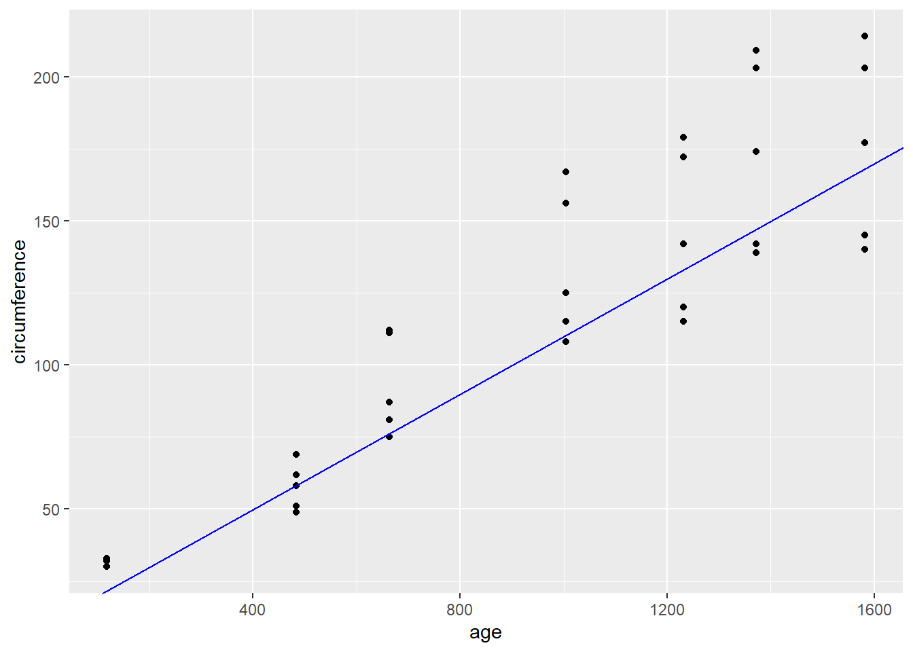
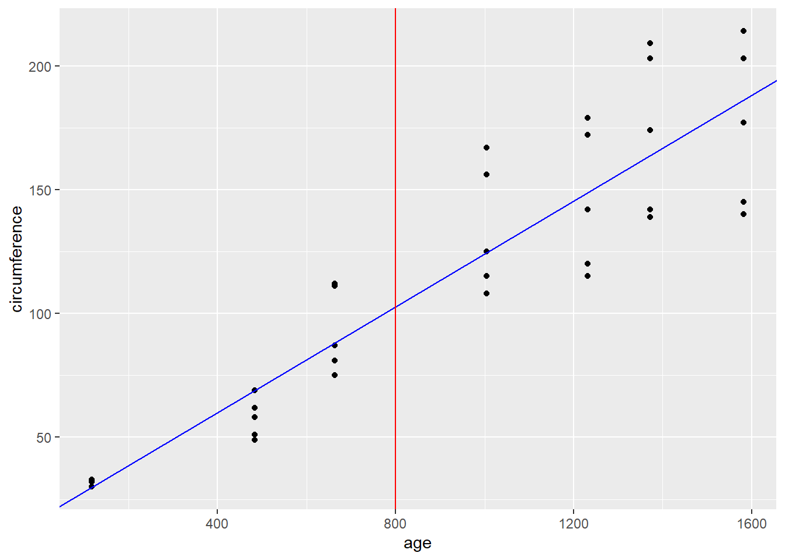

Cuanto medirá la circunferencia en promedio de un árbol de naránjas a los 800 días de plantarlo
# 1 GraficaOrange %>%# en x = los días y en y = la circunferenciaggplot(aes(x = age,y = circumference)) +geom_point() +# esto nos muestra que a medida que pasan los días, crece el tamaño de los árboles# lo que se busca con la regrecion lineal es trazar una recta que pase por la mitad de los puntos, de tal forma que para el día 800 encontrar cual va a ser el valor # es la b = al intercepto, cuando a = 1 o 0.1 b = y cuando a = 0.1 b = 10geom_abline(intercept =10,# es la a = a la pendiente, ejemplos 1, 0.5 y 0.1slope =0.1,col ='blue')

Mejor ajuste de regresión lineal simple, lm() encuentra el mejor valor para la pendiente y el intercepto
# la formula seria circumference con respecto a agelm(circumference ~ age, data = Orange)
Call:
lm(formula = circumference ~ age, data = Orange)
Coefficients:
(Intercept) age
17.3997 0.1068
# 1 GraficaOrange %>%# en x = los días y en y = la circunferenciaggplot(aes(x = age,y = circumference)) +geom_point() +# esto nos muestra que a medida que pasan los días, crece el tamaño de los árboles# lo que se busca con la regrecion lineal es trazar una recta que pase por la mitad de los puntos, de tal forma que para el día 800 encontrar cual va a ser el valor # es la b = al intercepto, cuando a = 1 o 0.1 b = y cuando a = 0.1 b = 10geom_abline(intercept =17.3997,# es la a = a la pendiente, ejemplos 1, 0.5 y 0.1slope =0.1068,col ='blue') +# para responder la pregunta, debemos trazar una línea vertical en el 800geom_vline(xintercept =800,col ='red')

Valor exacto:
Cuanto medirá la circunferencia en promedio de un árbol de naránjas a los 800 días de plantarlo
dias <-800# medida = a * dias + bmedida <-0.1068*800+17.3997medida